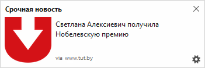

Разрешите получение уведомлений – и мы сообщим вам о важных новостях.
Не волнуйтесь, мы будем отправлять только самое главное. Вот как этот пример:

Получать уведомления:
Не волнуйтесь, мы будем отправлять вам только важные новости.
Иструкции по настройке:
Ваш браузер не поддерживает пуш уведомления.